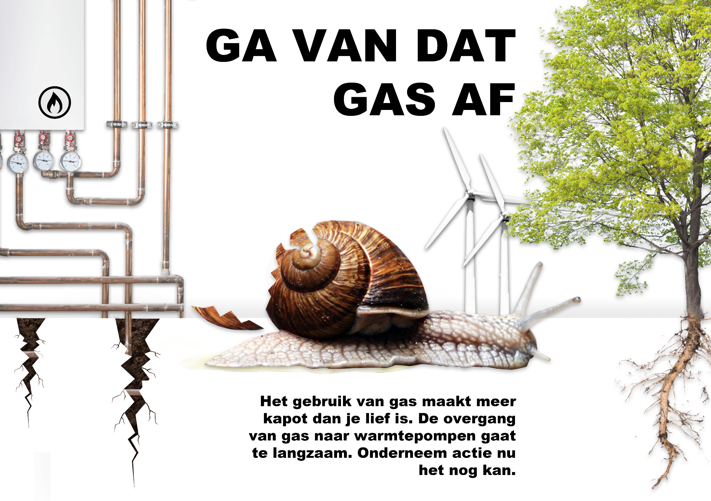

For this subject we had to walk through Amsterdam and discover typographies, and after that we had to
choose a typography to investigate. After that we had to make a folder/poster about the typography and its
background.
We searched the streets of Amsterdam, nearby the school and we've found some pretty nice ones.
I had found a board of tiles on a wall with "Eerste Hollansche Levensverzekeringsbank" on it,
which means the first dutch life insurance bank. The typography was inspired by the 1920's, so my
folder/poster was about the "Roaring Twenties", or "La Belle Epoque". The color I chose was dankbrown/red
because those colors are a little bit more chique and classy. Here is a picture of my foler, front and back.
For this subject we learned about the meaning behind a picture or poster. So we worked with theories like "Ehots" and "Pathos", but also "indexical signs", substitution, Gestalt theory and many more. In the end we had to design a poster which inclused a lot of those theories we learned about. The picture below is my poster and my explanation (Dutch).
My explanation For the first project we had to make a photo collection about something you're interested in. My collection was about real and fake laughing. So I searched for a lot of pictures of people with a real smile but also pictures with people on it that are fake smiling. I wanted people to learn about the differences between a fake and a real smile. After you've collected your photos, you had to make a publication from your collection of photos and your information about the subject. Click the link below to see my publiation.
My publication